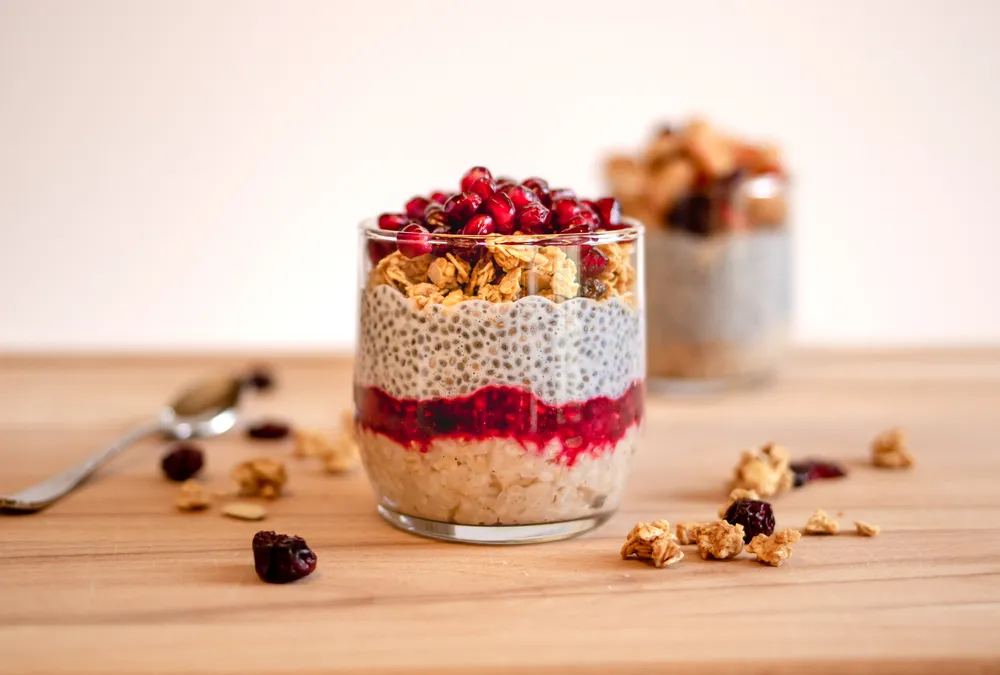

Seeds With Anti-Aging Benefits

- Eating more seeds can help prevent wrinkles, thinning hair, heart disease, osteoporosis, and other chronic diseases.
- Seeds are chock-full of nutrients that can help with anti-aging goals, including antioxidants, healthy fats, and vitamins.
Seeds may be small, but they’re nutritional powerhouses that can give your diet an anti-aging boost. Much like nuts , seeds are packed with antioxidants, protein, healthy fats, and vitamins. This means seeds may help prevent wrinkles, decrease the risk of osteoporosis, and reduce hair loss–to name just a few of the benefits!
Pumpkin Seeds
Pumpkin seeds can help with several anti-aging goals. For starters, Healthline says pumpkin seeds are rich in antioxidants like carotenoids and vitamin E. From improving heart health to warding off wrinkles, pumpkin seeds have a host of anti-aging benefits as a result of those antioxidants, according to Women’s Health .
Besides antioxidants, pumpkin seeds are also a good source of magnesium, vitamin K, and zinc — all of which can help prevent or manage osteoporosis , according to Healthline . The source says the body’s ability to absorb magnesium diminishes as we age, so pumpkin seeds can help combat that reality.
Pomegranate Seeds
While pomegranate seeds might not be the first thing that comes to mind when you think about seeds, perhaps they should be. Juicy seeds from pomegranates pack an anti-aging punch in a few ways. For example, Medical News Today says they can protect against inflammation and free radical damage thanks to antioxidants.
One of those antioxidants is Vitamin C, which Livestrong says supports collagen production. So, pomegranate seeds may help improve skin appearance and prevent wrinkles. Additionally, according to the source, studies show that eating pomegranate seeds may help lower blood pressure and the risk of Alzheimer’s disease .
Chia Seeds
If you want to give your diet an anti-aging boost, then chia seeds are another great option. For one thing, WebMD says they’re rich in omega-3 fatty acids . That matters because omega-3s may help support brain health. So, those who aren’t that big on eating fish can instead get beneficial omega-3s from chia seeds.
Chia seeds are also rich in manganese, magnesium, phosphorus, and calcium, according to FoodTrients . Given that, they can help support strong bones and subsequently reduce the risk of osteoporosis. Plus, the source says chia seeds are even a good source of antioxidants. So, they’ve got a lot going for them!
Quinoa
Wait, quinoa on a list of seeds? You might think of it as more of a grain, but technically quinoa is a seed. Cook For Your Life even calls it a “super seed.” One reason for that moniker is its high protein content. “Unlike most plant-based foods, quinoa is a complete protein,” according to WebMD .
That means quinoa has all nine essential amino acids. Since our bodies can’t produce amino acids, we need to get them from food. As a result, quinoa can be a helpful addition to your diet. The source says quinoa is also a good source of fiber and antioxidants. So, it can help support heart health and lower the risk of heart disease.
Sunflower Seeds
Sunflower seeds have long been associated with baseball . And it seems baseball players are on to something. As FoodTrients puts it, “These easy seeds are really powerhouse nutrients disguised as a cheap snack.” One benefit the source highlights is the high fiber content of sunflower seeds , which “helps sweep toxins from the colon.”
And the anti-aging benefits don’t stop there. The Cleveland Clinic says sunflower seeds are a good source of vitamin E and selenium. Both nutrients can help promote hair growth, according to Healthline . So, those concerned about thinning hair may be especially interested in adding sunflower seeds to their diet.
Flaxseeds
Want to prevent wrinkles, sagging, and dark spots? Then you may want to eat more flaxseeds . That’s because FoodTrients says flaxseeds contain phytoestrogens, which have antioxidant properties. Plus, the source says phytoestrogens are plant estrogens that may help relieve symptoms of menopause and post-menopause.
And much like chia seeds , flaxseeds are also rich in omega-3 fatty acids . In addition to supporting brain health, Healthline says omega-3s may boost hair growth, reduce hair loss, and protect against sun damage to the skin. One quick note: the outer shell can be challenging to digest, so the Cleveland Clinic recommends ground-up flaxseeds.
Hemp Seeds
Hemp seeds can also help keep skin smooth and healthy. According to Healthline , they’re a great source of protein and, like quinoa, have all nine essential amino acids. As a result, Elle says hemp seeds can help “synthesize collagen and elastin, keeping skin firm and supple.”
Plus, hemp seeds contain omega-6 and omega-3 fatty acids . In fact, “the proportion of omega-6 to omega-3 fats in hemp seed oil is roughly 3:1, which is considered a good ratio,” according to Healthline. One thing to keep in mind: Elle recommends eating hemp seeds raw because “heat will destroy their delicate oils.”
Sesame Seeds
Small but mighty, sesame seeds can also help with anti-aging goals. “In addition to minerals and fiber,” the Cleveland Clinic says, “sesame seeds are high in selenium.” As previously mentioned, selenium can help promote healthy hair . Plus, the source says selenium can decrease the risk of chronic disease.
Medical News Today also highlights a few compounds that sesame seeds contain: sesamol, sesamolin, and sesamin. The source says sesame seeds may have anti-aging, anti-inflammatory, and antihypertensive properties as a result. Plus, the source says sesame seeds provide vitamin E, calcium, and antioxidants .
Easy Ways to Eat More Seeds
Adding seeds to your diet can help with a variety of anti-aging goals. From keeping your skin smooth and your hair full to supporting brain health and heart health, seeds can play a role in helping to prevent premature aging . But how can you easily incorporate seeds into your diet?
While you can always grab a small handful of seeds for an easy grab-and-go snack, there are so many more ways to eat seeds. For instance, you could spread seed butter on toast or bread chicken with seeds instead of bread crumbs. Keep reading to learn more practical and delicious ideas!
Check Out Seed Butters
Instead of topping your toast with peanut butter, consider mixing things up with your choice of seed butter. Options include sunflower seed butter, pumpkin seed butter, and sesame seed butter. Women’s Health says seed butters are a “great alternative to nut butters and can be used in the same way.”
So, in addition to spreading it on toast and rice cakes, you can also mix it into oatmeal and smoothies. If you have a nut allergy , then seed butters may be especially appealing. However, you’ll want to read the label first because some companies make seed butters that also contain nuts.
Add Seeds to Meals You Already Make
Incorporating seeds into your daily diet doesn’t have to be complicated. As a matter of fact, you probably already make several meals that could benefit from a sprinkle of seeds. Here are a handful of ideas to get you started:
- Coat fish or chicken with seeds
- Sprinkle seeds on top of salads
- Add seeds to hummus or guacamole
- Garnish hearty soups with seeds
- Bake seeds into homemade bread
See, you probably don’t need to make extreme dietary changes to eat more seeds. Next, we’ll look at easy ways to add seeds to your breakfast.
Start Your Day With Seeds
Breakfast can be an especially great opportunity to eat more seeds. In fact, spreading seed butter on your morning toast is just the beginning. Here are more ideas to start your day with seeds:
- Blend seeds into smoothies
- Mix seeds into jams or preserves
- Layer seeds into yogurt parfaits
- Add seeds to oatmeal or porridge
- Sprinkle seeds on avocado toast
In other words, giving your diet an anti-aging boost can be as simple as sprinkling seeds on meals you already eat.
Source: https://activebeat.com/diet-nutrition/seeds-with-anti-aging-benefits/